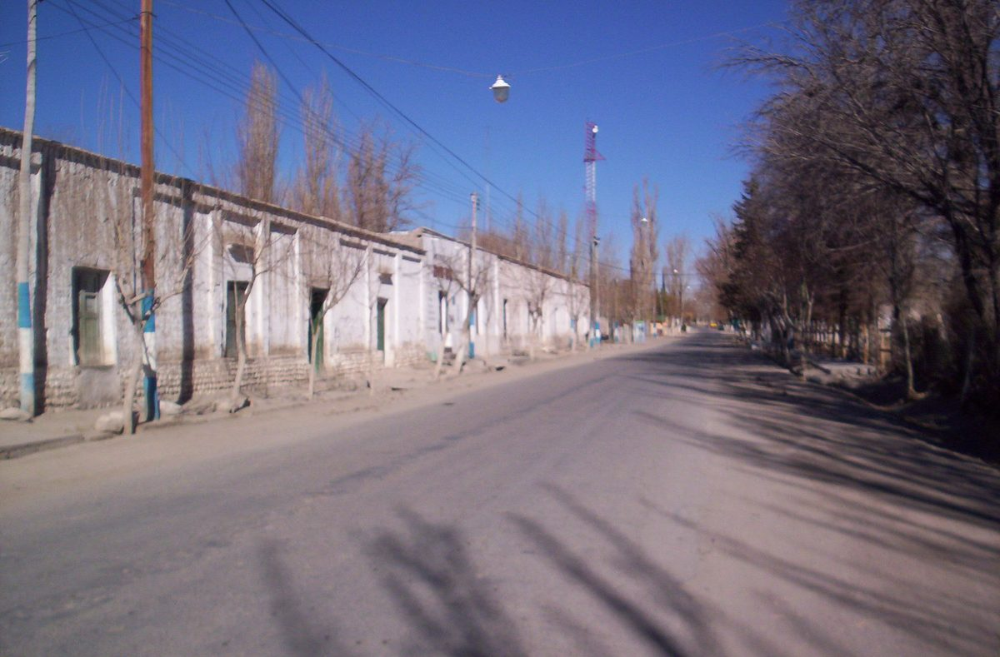

아르헨티나 산후안주, 광산 기금으로 이글레시아에 '공동체 하이브리드 태양광 단지' 입찰…태양광 10MWp·배터리 30MWh

베라데로 광산 인프라 신탁기금이 건설비 전액 부담, 첫 추정 투자액 186억 페소 넘어…주 전력규제기관이 취약계층 우선 주민 혜택 방식 정할 예정, '전국 첫 사례'는 주정부 설명
아르헨티나 산후안주가 광산 활동에서 나온 신탁기금으로 이글레시아(Iglesia) 지역에 태양광 발전과 배터리를 묶은 '공동체 하이브리드 태양광 단지'를 세우기 위한 입찰을 진행하고 있다. 주 광업부와 인프라·수자원·에너지부가 주 에너지공사(EPSE)를 통해 추진하는 이 단지는 태양광 10MWp와 30MWh 규모 배터리 저장장치(BESS)로 이뤄지며, 공개입찰 제02/2026호는 10월 20일 개찰을 마치고 받아들인 제안서를 평가하는 단계에 있다. 건설비는 베라데로(Veladero) 사업 6단계 인프라 신탁기금이 모두 대고, 첫 추정 투자액은 186억 페소를 넘으며 최종 금액은 입찰이 끝난 뒤 정해진다. 배터리는 햇빛이 강한 낮 시간의 전기를 저장했다가 필요할 때 내보내고, 전국 연계 계통(SADI)에서 정전이 났을 때 망을 다시 살리는 '블랙 스타트' 기능과 출력 보강도 맡는다. 주정부는 이글레시아 전기 이용자를 위한 혜택 제도를 두되 구체적인 방식은 주 전력규제기관(EPRE)이 가장 취약한 계층을 우선해 나중에 정한다고 밝혔으며, 단지는 주가 추진하는 공공 설비로 주민이 출자하거나 소유하는 구조는 드러나지 않았다. 주정부는 이 단지가 산후안주와 아르헨티나에서 처음인 공동체 하이브리드 태양광 단지라며, 광산 수익을 지역 에너지 기반시설로 바꾸고 이 지역에서 만든 전기가 지역의 필요에 먼저 쓰이게 하는 것이 사업의 전제라고 설명했다.
시민에너지 관점
광산에서 나온 돈 전액으로 태양광 10MWp와 배터리 30MWh를 세워 그 지역에 먼저 쓰게 하겠다는 구상은, 땅에서 캐낸 자원의 이익이 개발지에 남아야 한다는 원칙을 눈에 보이는 기반시설로 옮긴 사례다. 혜택 방식과 금액이 아직 정해지지 않아 결국 이름뿐인 '공동체 단지'로 끝날 수 있다는 우려가 있지만, 그렇기 때문에 배분 규칙을 규제기관 혼자 정할 것이 아니라 이글레시아 주민과 함께 정해야 약속이 요금 고지서에서 확인된다. 설비가 공공 소유로 남더라도 주민 조합이 운영 감시와 수익 배분에 참여할 자리를 만들어야 '여기서 만든 전기는 여기에'라는 말이 정권이 바뀌어도 지켜진다. 국내에서도 바람과 햇빛 같은 지역 공유자원으로 세우는 발전소는 사업 공고 단계에서 주민 혜택의 크기와 배분 방식, 주민 지분 자리를 먼저 숫자로 밝혀야 한다.
출처: Diario Huarpe 2026-10-29 기자 미표기 원문 보기
アルゼンチン・サンフアン州、鉱山基金でイグレシアに「コミュニティー型ハイブリッド太陽光団地」を入札…太陽光10MWp・蓄電池30MWh
ベラデロ鉱山インフラ信託基金が建設費を全額負担、当初の推定投資額は186億ペソ超…州電力規制機関が最も弱い立場の層を優先した住民向け優遇の方式を決める予定、「国内初」は州政府の説明
アルゼンチン・サンフアン州が、鉱山活動から生まれた信託基金を使い、イグレシア（Iglesia）地域に太陽光発電と蓄電池を組み合わせた「コミュニティー型ハイブリッド太陽光団地」を建設するための入札を進めている。州の鉱業省とインフラ・水資源・エネルギー省が州エネルギー公社（EPSE）を通じて進めるこの団地は、太陽光10MWpと容量30MWhの蓄電システム（BESS）で構成され、公開入札第02/2026号は10月20日に開札を終え、受理した提案書を評価する段階にある。建設費はベラデロ（Veladero）事業第6段階インフラ信託基金がすべて賄い、当初の推定投資額は186億ペソを超え、最終的な金額は入札が終わった後に確定する。蓄電池は日差しの強い昼間の電力をためて必要な時に送り出すほか、全国連系系統（SADI）で停電が起きた際に系統を再び立ち上げる「ブラックスタート」機能と出力の補強も担う。州政府はイグレシアの電力利用者向けの優遇制度を設けるとし、具体的な方式は州電力規制機関（EPRE）が最も弱い立場の層を優先して後に決めると明らかにしたが、団地は州が進める公共設備で、住民が出資したり所有したりする仕組みは示されていない。州政府はこの団地がサンフアン州とアルゼンチンで初めてのコミュニティー型ハイブリッド太陽光団地だとし、鉱山の収益を地域のエネルギー基盤に変え、この地域でつくった電気をまず地域の必要に使うことが事業の前提だと説明した。
市民エネルギーの視点
鉱山から生まれた資金の全額で太陽光10MWpと蓄電池30MWhを建て、その地域で先に使わせるという構想は、土地から掘り出した資源の利益は開発地に残るべきだという原則を目に見えるインフラに移した事例だ。優遇の方式も金額もまだ決まっておらず、結局は名ばかりの「コミュニティー団地」で終わりかねないという懸念はあるが、だからこそ配分のルールは規制機関だけで決めるのではなく、イグレシアの住民とともに決めてこそ、約束が電気料金の請求書で確かめられる。設備が公共所有のままでも、住民の組合が運営の監視と収益配分に加われる場をつくってこそ、「ここでつくった電気はここに」という言葉が政権が代わっても守られる。韓国でも風や日差しのような地域の共有資源で建てる発電所は、事業公告の段階で住民への恩恵の規模と配分方式、住民持ち分の枠をまず数字で示すべきだ。
出典: Diario Huarpe 2026-10-29 記者名なし 原文を読む
阿根廷圣胡安省用矿业基金为伊格莱西亚“社区混合光伏园区”招标…光伏10MWp、电池30MWh
贝拉德罗矿业基础设施信托基金承担全部建设费，初步估算投资超过186亿比索…省电力监管机构将优先照顾最弱势群体来确定居民优惠方式，“全国首例”为省政府说法
阿根廷圣胡安省正利用矿业活动产生的信托基金，为在伊格莱西亚（Iglesia）地区建设一座把光伏发电和电池结合起来的“社区混合光伏园区”进行招标。该园区由省矿业部和基础设施、水利与能源部通过省能源公司（EPSE）推进，由10MWp光伏和容量30MWh的电池储能系统（BESS）组成；第02/2026号公开招标已于10月20日开标，目前处于评估已受理投标书的阶段。建设费用全部由贝拉德罗（Veladero）项目第六阶段基础设施信托基金承担，初步估算投资超过186亿比索，最终金额要在招标结束后确定。电池将储存日照最强的白天所发的电，在需要时放出，并在全国互联电网（SADI）停电时承担让电网重新启动的“黑启动”功能和补充出力。省政府表示将为伊格莱西亚的电力用户设立优惠制度，具体方式日后由省电力监管机构（EPRE）优先照顾最弱势群体来确定；该园区是省里推进的公共设施，尚未显示居民出资或拥有的结构。省政府称，这是圣胡安省和阿根廷首个社区混合光伏园区，项目的前提是把矿业收益转化为地方能源基础设施，让本地产生的电力首先用于本地需要。
市民能源视角
用矿业资金全额建设10MWp光伏和30MWh电池、并让当地优先使用，这一构想把“从土地里开采出的资源，其收益应留在开发地”的原则变成了看得见的基础设施。优惠方式和金额都还没有确定，有人担心最终只会是一个有名无实的“社区园区”，但正因如此，分配规则不应由监管机构单独决定，而要与伊格莱西亚居民一起制定，承诺才能在电费单上得到兑现。即便设施仍归公共所有，也要为居民合作社留出参与运营监督和收益分配的位置，“这里发的电留在这里”才能在政府更替后依然算数。在韩国，用风和阳光这类地方共有资源建设的电站，也应在项目公告阶段先用数字公开居民受益的规模、分配方式和居民持股的份额。
来源: Diario Huarpe 2026-10-29 未署名 查看原文
Argentina's San Juan Province tenders 'community hybrid solar park' in Iglesia funded by mining trust — 10 MWp of solar and 30 MWh of batteries
Veladero mining infrastructure trust fund covers the full construction cost, initially estimated at more than 18.6 billion pesos; provincial power regulator to set a resident benefit scheme prioritising the most vulnerable; 'first in the country' is the provincial government's description
Argentina's San Juan Province is running a tender to build a "community hybrid solar park" combining solar generation and batteries in the department of Iglesia, paid for with a trust fund derived from mining activity. Promoted by the provincial Ministry of Mining and the Ministry of Infrastructure, Water and Energy through the provincial energy company EPSE, the park will consist of 10 MWp of solar and a 30 MWh battery energy storage system (BESS); bids under Public Tender No. 02/2026 were opened on October 20 and the admitted proposals are now being evaluated. Construction will be paid for entirely by the Veladero Project Phase VI Infrastructure Trust Fund, with an initial estimated investment of more than 18.6 billion pesos and the final amount to be set once the tender is completed. The batteries will store power from the sunniest hours of the day for release when needed, and will also provide "black start" capability to restore the grid after an outage on the national interconnected system (SADI) as well as additional capacity. The provincial government said it will set up a benefit scheme for electricity users in Iglesia, with the details to be decided later by the provincial electricity regulator EPRE giving priority to the most vulnerable, while the park is a public facility promoted by the province and no structure for residents to invest in or own it has been disclosed. The government described it as the first community hybrid solar park in San Juan and in Argentina, saying the premise of the project is to turn mining revenue into local energy infrastructure so that power generated in the area serves local needs first.
Citizen Energy View
Using mining money in full to build 10 MWp of solar and 30 MWh of batteries for local use first turns the principle that profits from resources dug out of the ground should stay where they were extracted into visible infrastructure. There is a worry that, with the form and size of the benefit still undecided, this could end up a "community park" in name only, but that is exactly why the sharing rules should be set together with the people of Iglesia rather than by the regulator alone, so the promise can be checked on electricity bills. Even if the facility stays in public hands, residents' co-operatives need a seat in overseeing its operation and distributing its returns if "power made here stays here" is to survive a change of government. In Korea, too, power plants built on shared local resources such as wind and sunlight should state, in numbers and at the tendering stage, how large the benefit to residents will be, how it will be distributed and how much room there is for resident ownership.
Source: Diario Huarpe 2026-10-29 No byline Read the original